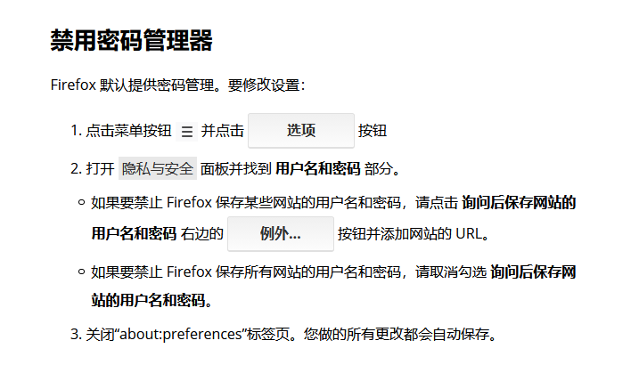

背景
今天看到微软发布了基于chromium的Edge浏览器，下载了Beta版本下来体验。但是我发现了一个隐患很大的地方—-Edge把我的chrome里的浏览记录，甚至是网页保存的密码，都同步过去了。当时我就纳闷了，微软这么牛逼的吗？后来我发现，不是人家太流弊，而是开源这东西，一言难尽。。。。。。
过程
在网上查了一番资料之后，发现如下几点（如果有错误，请指正）：
- chrome其实是会对你存储的密码加密的。但是加密算法是开源的，所以，找到解密算法，破解密码应该就不是什么问题了
具体可以参见下面的文章
- 加密的密码，一般只有对应的凭据才能查看（比如你的windows以KO这个用户登录，那么只有KO能查看密码，你导出密码文件到其他地方查看，也是没用的）
这是解密的三个要素
1.加密密钥，位于%appdata%\Microsoft\Protect下对应sid文件夹下的文件
2.数据库文件Login Data
3.用户明文的密码，用于解密加密密钥
- 网上已经有很多工具，可以直接导出chorme里面的账号密码了…。比如这个牛逼的网站，提供了相应的工具
- 从上面这个工具的介绍可以看出，不止chorme，甚至Firefox，safari等浏览器也难以幸免
Description
WebBrowserPassView is a password recovery tool that reveals the passwords stored by the following Web browsers: Internet Explorer (Version 4.0 - 11.0), Mozilla Firefox (All Versions), Google Chrome, Safari, and Opera. This tool can be used to recover your lost/forgotten password of any Website, including popular Web sites, like Facebook, Yahoo, Google, and GMail, as long as the password is stored by your Web Browser.
- IE，Edge，Chrome和Firefox都利用Windows DPAPI（数据保护接口）来加密自动填写数据，并在下次使用之前将其解密
DPAPI（数据保护接口）是一对调用函数，为用户和系统进程提供操作系统级别的数据保护服务。可是我们知道数据保护是操作系统的一部分，所以每个应用程序都可以保护数据，而不需要任何特定的加密代码，也就是说不需要DPAPI进行的函数调用。
那么问题来了：浏览器使用DPAPI函数，同时加密所需的数据，而且不需要用户干预。任何脚本或代码都可以在不需要特殊许可或提升权限的情况下就可以调用解密DPAPI函数来解密数据，比如信用卡信息
Firefox
经过考虑，打算弃用Chrome。毕竟Google家的嘛，也是有点隐患的
于是了解了Firefox的密码管理策略
尽管密码管理器将用户名和密码以加密格式存储在本地硬盘上，可以访问该计算机的用户配置文件的人仍然可以看到并使用这些信息。使用【主密码保护存储的密码】 一文会告诉您如何防止这种情况，以及如何在计算机丢失或被盗的情况下保护您的信息。
上面引用Firefox官网文章，跟Chrome差不多，但我注意到了一个【主密码保护】。
后面在Google搜了一圈，大多也是说这个弱加密，容易被爆破
https://www.cyclonis.com/zh-hans/why-should-not-rely-firefoxs-master-password/
其实我的目的是这样的，系统的密码肯定是第一道防线，电脑肯定不会借给他人。如果借给他人，也是另外开一个系统用户（后面会验证一下这个方法，是否能使用我的密码）。但是，如果我的电脑感染了后门，这个主密码是否能成为我的第二道防线？！这个是我需要验证的。
我的实验结果是，开启了火狐的主密码保护后，nirsoft的软件无法获取到火狐保存的账号密码，而且每次网页要调用登录时，都需要输入主密码。嗯，确实好多了，给火狐点赞
另外，Chrome 和 Firefox 的密码文件默认都放置在 当前用户的
AppData目录下面。别人借你电脑，你开另外一个普通权限用户账户，应该是看不到你的账号密码了。我进入PE环境运行nirsoft的软件，发现chrome和Firefox都看不到记录了。
结论
从上面的分析，可以得出
设置了【主密码保护】后的火狐比Chrome好（前提不考虑爆破的问题）
设置火狐【主密码保护】，一定要设置一个很复杂的密码，才不容易被爆破。另外这个主密码一但忘记，是可以取消的，具体的方法自己查，但是吶，你保存的网页密码都会不见
如果你是个注重安全的人，电脑不要借给别人
在搜索资料的时候，在V2EX上面有个“chorme网页保存的密码是明文”的讨论，虽说那个楼主的说法表述有问题，但是看了一些言论，莫名搞笑，比如：“总有刁民想害朕” 。感觉大伙的安全意识还有待提高啊！
如果你每次打开火狐后，发现一会就弹出主密码输入框，那是你登录了火狐的账号。退出火狐账号之后，就不会出现这个情况
如果火狐设置里面出现“你的浏览器由你的组织管理”这种情况，可能是杀毒软件（比如：AVG）造成的，卸载杀毒即可。网上说可以删除注册表项，但是重新开机后，还是出现该提示，没用
如果你不需要火狐的密码管理，可以禁用它
